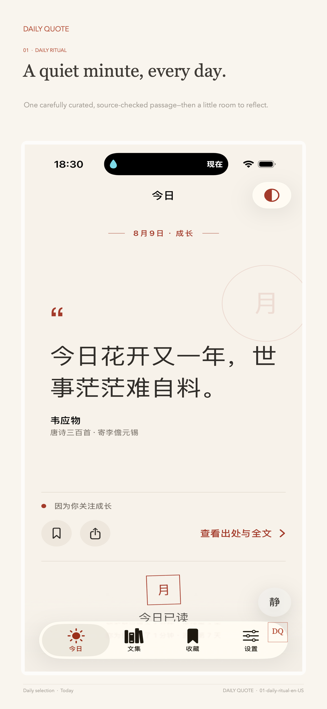
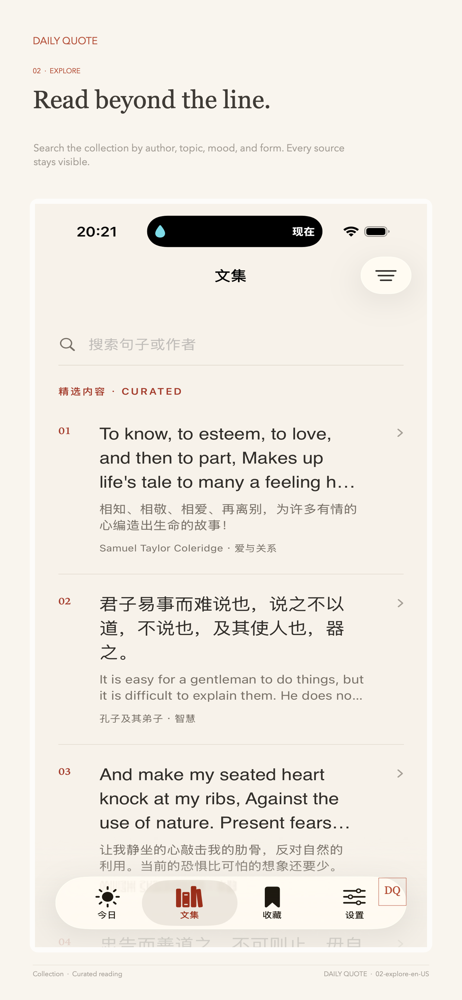
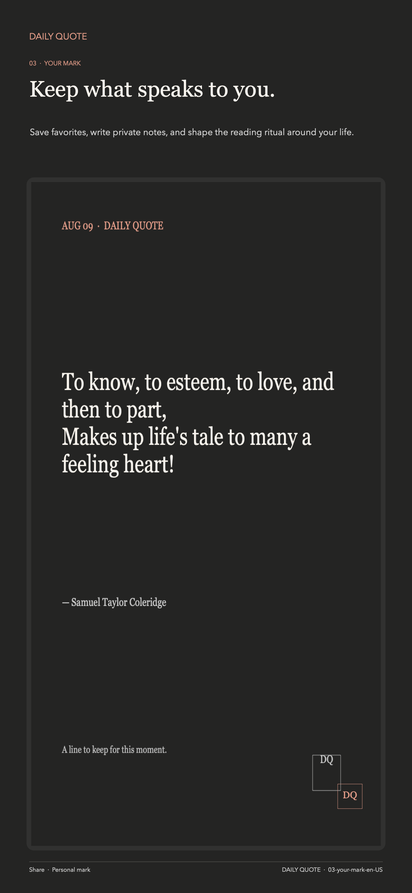

Daily Quote · 句刻
A sentence
for this moment.
Begin with what matters to you and how this moment feels. Read one sentence worth pausing for, keep a note, or turn it into a share card of your own.
- Chinese and English
- No account required
- Local by default

The daily ritual
Not a feed. Not another reason to read more.
Just one quiet pause, kept for you each day.

01 Read at your rhythm
From one daily meeting
to a living collection.
Choose the themes you care about, then browse by subject, mood, or form whenever you want to go further. Calm, courage, and new beginnings stay close without becoming a noisy feed.
- Bilingual texts, sources, and project translations
- Theme, mood, format, and full-text search
- Favorites, notes, and traceable reading history

02 Made to be kept
Turn a sentence
into a paper keepsake.
Choose the paper, typography, ratio, and a private mark inspired by the moon, mountains, water, or leaves. Export it in high resolution or share it with someone who matters.
Daily Quote Plus
Let a brief pause
grow into a reading life.
Plus opens deeper ways to create, follow a collection, and look back—while the essential daily reading remains quiet and complete.
- 01
A freer share canvas
Edit layout, paper, type, ratio, and marks; save personal templates and export in high resolution.
- 02
Collections and deeper reading
Keep progress and offline editions, then opt in per request for AI interpretation and reflection questions.
- 03
Made for your routine
Advanced widgets, bilingual audio, yearly reflections, and optional private iCloud sync.
Daily Quote Plus subscriptions are managed through the Apple App Store. Check the app for pricing, supported regions, and availability.
Local by design
The more personal it feels,
the more privacy matters.
Daily Quote requires no account, includes no advertising SDK, and does not track you across apps. Interests, favorites, notes, personal marks, and reminders stay on your device by default. Essential content and subscription services use the network; optional diagnostics require you to opt in. See the privacy policy for details.
Read the privacy policy